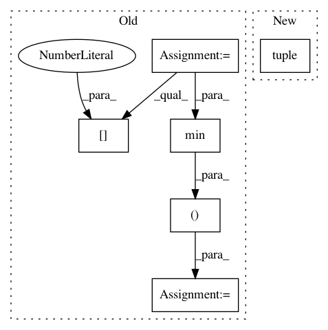

d381fb0787395076ecb8a3bd6984f52a16793fae,dataset/batch_image.py,ImagesBatch,_cutout_,#ImagesBatch#Any#Any#Any#Any#,822
Before Change
image_shape = self._get_image_shape(image)
shape = _get_shape(shape)
origin = _get_origin(shape, origin)
right_bottom = (min(origin[0] + shape[0], image_shape[0]),
min(origin[1] + shape[1], image_shape[1]))
image[origin[0]:right_bottom[0], origin[1]:right_bottom[1]] = color
return image
After Change
image = image.copy()
shape = (shape, shape) if isinstance(shape, Number) else shape
origin = self._calc_origin(shape, origin, self._get_image_shape(image))
image.paste(PIL.Image.new("RGB", shape, color), tuple(origin))
return image
// def _get_shape(shape):
// return (shape, shape) if isinstance(shape, Number) else shape
In pattern: SUPERPATTERN
Frequency: 3
Non-data size: 6
Instances
Project Name: analysiscenter/batchflow
Commit Name: d381fb0787395076ecb8a3bd6984f52a16793fae
Time: 2018-03-27
Author: g.ivanov@analysiscenter.ru
File Name: dataset/batch_image.py
Class Name: ImagesBatch
Method Name: _cutout_
Project Name: analysiscenter/batchflow
Commit Name: 49f4e83ae4323e032bdd232e466e59b4aeceb458
Time: 2018-03-28
Author: g.ivanov@analysiscenter.ru
File Name: dataset/batch_image.py
Class Name: ImagesBatch
Method Name: _cutout_
Project Name: Calamari-OCR/calamari
Commit Name: de52463f855369ad17148054fa5a0a634c6b99a1
Time: 2021-01-19
Author: christoph.wick@planet-ai.de
File Name: calamari_ocr/ocr/dataset/datareader/pagexml/reader.py
Class Name: PageXMLReader
Method Name: cutout